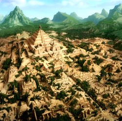
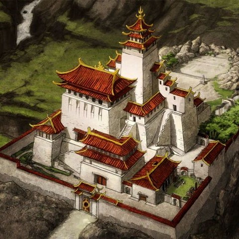

From the time you were a little kid, you were a gifted fire bender. You were always at the top of your class, won fire bending competitions, and even helped others who struggled with their bending. Bending was always a part of your life, even to the point where it helped you immediately bonded with a dragon that you met on one of your many adventures with your friends. Dragons were seen as the original fire benders because of their firey breath. They are highly respected by people of the fire nation. However, not many people are able to bond with them because of their untamed, frightful nature. When you met your dragon, one of her wings was stuck under a rock. Your friends were too scared to help her, but you decided to try to remove the rock, and once you did, the dragon could not leave your side. The dragon decided to stick by you and protect you in return for saving her life, and your fire bending ability strengthened the bond between you two.
Fire bending meant everything to you, so the day that your bending started weakening, you were the most frightened you had ever been. Your fire bending had always been strong and you never struggled to produce it. You began to panic because you had never heard of something of the sort happening to any other bender. In your panic, you ran to the largest library in the city in hopes of finding answers. After hours of reading through books, you came across a restricted section of the library. It was closed off, but there was no one around and dark, so you snuck in. In this section, you learned of a place called the Dragonbone Catacombs, a series of chambers built underneath the High Temple which mainly served as the burial grounds of all past Fire Lords. The Catacombs were also said to have murals depicting the history, myths, and legends of the Fire Nation, along with an archive of historical scrolls about specific points of Fire Nation history. You also found a book about the history of the Sun Warriors, an ancient civilization that is said to be the people who first discovered firebending from dragons. Unfortunately, the civilization has since been destroyed but the ruins of their civilization are still standing. You believed the ruins may hold some information that can help you bring your bending back, but you were not sure of this.
Where Should You Go?:
Sun Warrior Ruins |
Dragonbone Catacombs |